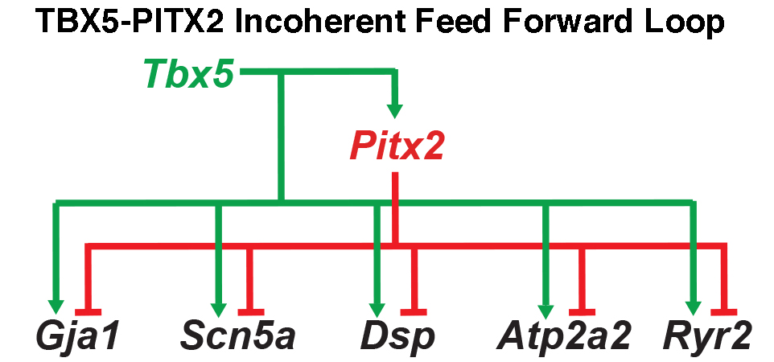
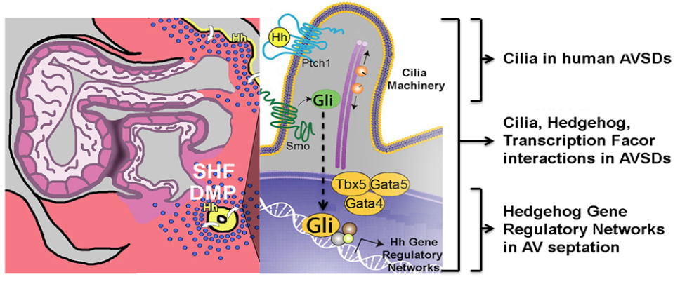

Research Summary
The Moskowitz lab investigates the gene regulatory networks that govern embryonic development and mature organ function. Our primary goal is to understand the molecular logic underlying biological processes including cardiac development and cardiac rhythm. We also investigate the relationship between gene regulatory network dysfunction, caused in some cases by genetic variants, and the molecular basis of disease, including Congenital Heart Disease and cardiac arrhythmias.
The Gene Regulatory Architecture of Cardiac Function
The human heart beats with remarkable fidelity on average for 2 billion cycles over the average human lifetime. The breakdown of cardiac rhythm control causes cardiac arrhythmias, the leading cause of death in the western world. Efforts to identify the molecular mechanisms underlying cardiac electrical activity are therefore necessary for future treatments. The Moskowitz laboratory studies the molecular basis of cardiac rhythm and its disturbance. Whereas hundreds of genetic regions have been associated with cardiac rhythm and arrhythmia risk, molecular mechanisms that link these genetic variations with cardiac rhythm disturbance remain largely unknown. Our lab is actively investigating the gene regulatory networks controlling cardiac rhythm and the functional noncoding genetic variation that underlies predisposition to arrhythmia.
We are interested in common genetic variations (genetic differences observed between individuals in the general human population) that reside near genes important for cardiac functions. We hypothesize that rhythm-associated genetic variations lie in DNA regions controlling gene transcription, causing quantitative changes in the expression of a network of genes related to cardiac rhythm control, ultimately disrupting cardiac conduction. Our lab takes an integrated experimental approach to identify cardiac rhythm gene regulatory networks and unveil how genetic variations predispose to arrhythmia, from high-throughput genomics to stem cell differentiation to single-cell physiological analysis. Our laboratory has identified molecular networks underlying cardiac conduction function and has demonstrated how common genetic variants modulate these molecular networks (Arnolds et al, 2012; Van den Boogaard et al, 2014; and Nadadur et al., 2016).

Our laboratory has recently uncovered a multi-tiered gene regulatory network critical for atrial rhythm control (e.g. Nadadur et al., 2016). This hierarchical network provides rhythm homeostasis and robustness in the atria. We further hypothesized that similar network structures regulate the distinct components of the cardiac conduction system, differentiating the slow-conducting atrioventricular node from the fast-conducting ventricular conduction system. Until recently, little was known about the molecular regulation of the distinct regions of the specialized cardiac conduction tissues. We have generated novel reagents to aid our investigation of the transcriptional and genomic control of the cardiac conduction system.

Ultimately, the aim of our work is to translate genetic implication into meaningful biological insight. With a greater understanding of cardiac conduction and arrhythmias generated by these efforts, we hope to eventually anticipate arrhythmia risk in individuals and generate platforms for new therapeutic discovery.
The Gene Regulatory Architecture of Cardiac Development
Congenital Heart Disease (CHD), defined as malformations of the heart present at birth, is the most common class of life-threatening birth defect. The most common class of CHD is cardiac septal defects, or inappropriate holes between the left and right sides of the heart, as observed in Atrioventricular Septal Defects (AVSDs). Achieving a mechanistic understanding of cardiac septation is therefore an essential goal for improving clinical approaches to structural heart disease.
Our laboratory has focused significant effort towards understanding the molecular basis of cardiac septation, a fundamental developmental process required for separating the pulmonary and systemic circulations. We have uncovered an extra-cardiac pathway for specification of the cardiac progenitor cells that generate the cardiac septum. Our laboratory has contributed significantly to this novel paradigm for the understanding of cardiac septation, centered on the role of the “Second Heart Field”. We have further implicated Hedgehog signaling, cilia, and cardiac transcription factors in in the functional development of Second Heart Field-derived structures (Hoffmann et al., 2009; Kamp et al. 2010; Friedland-Little et al., 2011; Xie et al, 2012; Hoffmann et al., 2014; Burnicka-Turek et al, 2016; Zhou et al., 2017).

The significance of Hedgehog signaling from pulmonary endoderm to cardiac mesoderm has unveiled developmental cross-talk between the developing heart and lungs. These investigations have established a novel paradigm for cardiac morphogenesis based on early developmental decisions in progenitor cells and opened a novel window into cardiac evolution. The identification of the gene regulatory networks for atrial septum development has ramifications for gene discovery for human Congenital Heart Disease. This work is an essential step towards defining the causes of human Congenital Heart Disease.
Work in the Moskowitz laboratory is funded by the NIH, the AHA, and the Foundation Leducq.